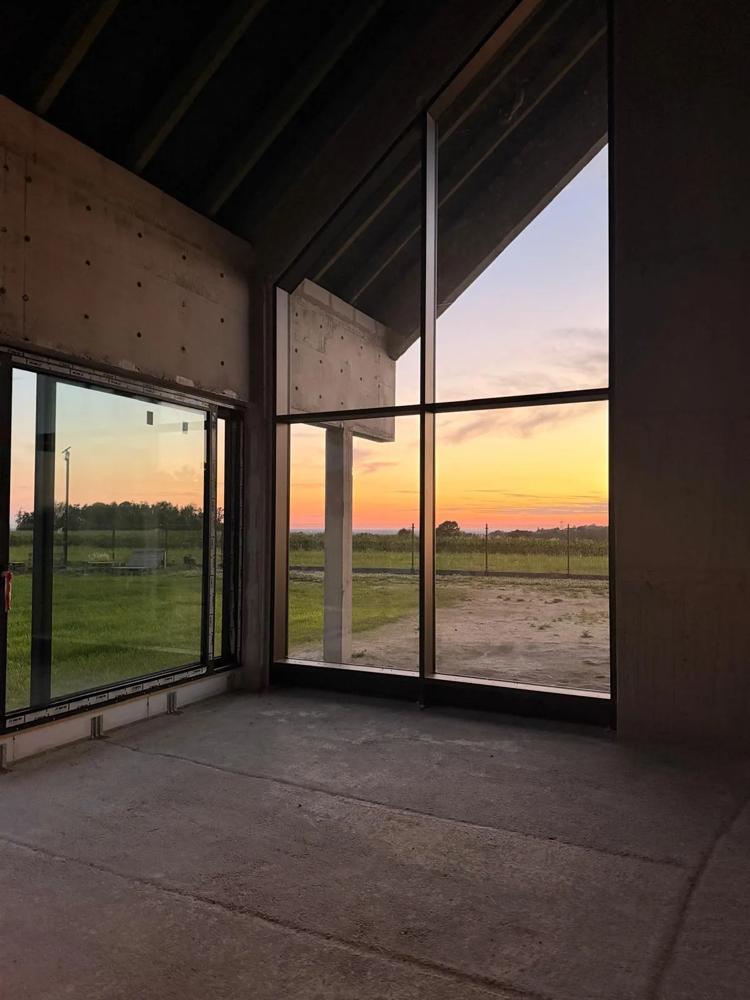
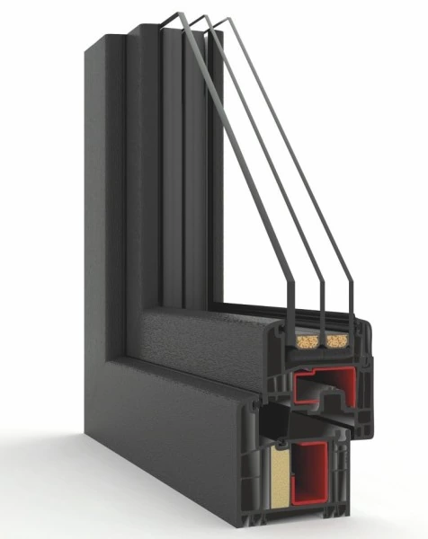
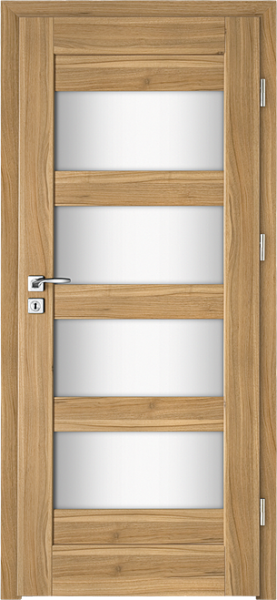
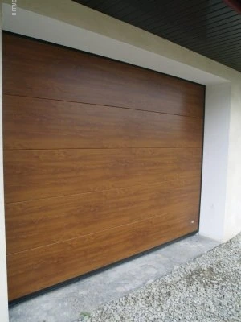
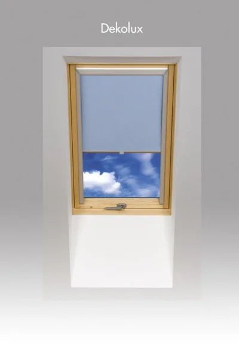
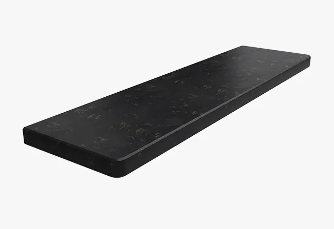
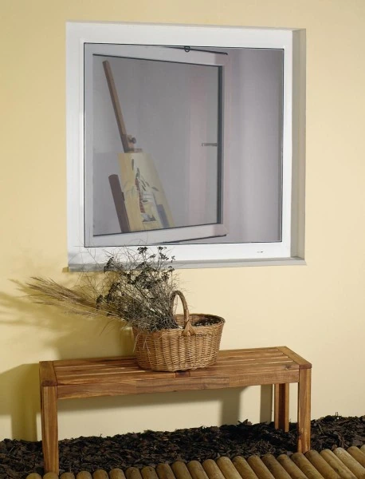
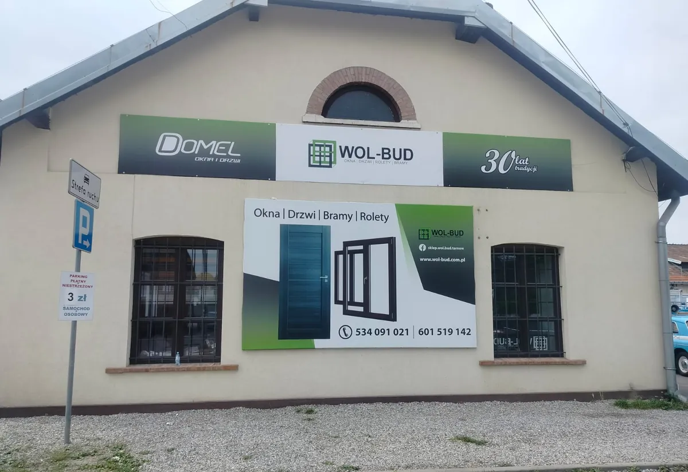
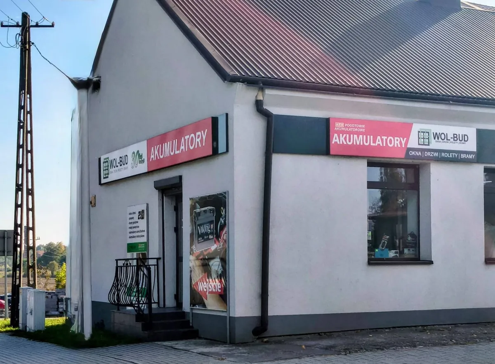

Okna i drzwi w szerokim wyborze
WOL-BUD to firma Wojciecha Wolańskiego, założona w 1995 roku. Oferuje okna PCV i aluminiowe, drzwi, bramy garażowe, rolety, parapety, doradztwo i montaż.
WOL-BUD Wojciech Wolański
WOL-BUD to doświadczona firma, która na rynku okien i drzwi działa już od 31 lat – została założona przez Wojciecha Wolańskiego w 1995 roku. Spośród naszych Klientów wyróżniamy zarówno inwestorów indywidualnych, jak również instytucje. Posiadane referencje, jak też ogromna liczba kontrahentów z polecenia, to najlepszy dowód na najwyższą jakość naszej oferty.
Czego szukasz?
Wybierz kategorię produktów lub sprawdź nasze usługi montażowe i serwisowe.

Okna PCV

Drzwi wejściowe

Drzwi wewnętrzne

Bramy garażowe

Stolarka aluminiowa

Rolety

Parapety i blaty

Moskitiery
Warto sprawdzić
Usługi montażowe i serwisowe
Pomiar, doradztwo i wycena
Prawidłowy – szczelny montaż
Serwis
Kompleksowa obsługa inwestycji
Prace wykończeniowe i murarskie
Daszki poliwęglanowe
Co mówią Klienci
- ★★★★★
Szczerze polecam. Wymiana okien skrzynkowych i parapetów lastryko w starym domu przebiegła bez problemowo. Estetyczne wykończenie, ekipa montująca profesjonalna i przyjazna:) Dziękujemy!
Opinia z Google - ★★★★★
To nie pierwszy raz kiedy korzystamy z usług firmy WOLBUD. Zdecydowanie polecamy miło fachowo i czysto w trakcie pracy jak i po jej zakończeniu. Terminy zawsze na czas. Kontakt w czasie trwania zamówienia bezproblemowy. Dzięki Panowie
Opinia z Google - ★★★★★
Firma i jej pracownicy z profesjonalnym podejściem do klienta i wykonywanych usług! Wszystko zgodnie z zamówieniem i umową. Punktualnie i dokładnie wykonane. Przed podpisaniem umowy fachowe porady. Polecam.
Opinia z Google - ★★★★★
Zamówiłem w Firmie Wol-Bud okna, rolety, parapety i bramę garażową z montażem do Niemiec. Jestem bardzo zadowolony z jakości wykonanych prac, fachowości i obsługi klienta. Polecam
Opinia z Google - ★★★★★
Firma godna polecenia, jakość wykonania super i co najważniejsze nie ma żadnych proplemów przy gwarancji POLECAM
Opinia z Google - ★★★★★
Fachowcy z najwyższej półki, rzetelna obsługa i doradztwo a towar zgodny z zamówieniem. Szczerze polecam
Opinia z Google - ★★★★★
Okna bardzo dobrej jakości. Fachowa obsługa, potrafią doradzić, montaż bez żadnych problemów.
Opinia z Google
Wybrane opinie z naszego profilu w Google. Nie sprawdzamy, czy ich autorzy kupili nasze produkty. Wszystkie opinie znajdziesz w Google.
Realizacje


Partnerzy

Chętnie doradzimy
Zadzwoń albo zajrzyj do naszych salonów sprzedaży w Tarnowie i Radłowie. Umówimy pomiar i odpowiemy na Twoje pytania.
- E-mail:biuro@wol-bud.com.pl
- Facebook:Zobacz nasz profil ↗
- Czynne:Poniedziałek – piątek 08:00–16:00
- Sobota:09:00–12:00 (Tarnów i Radłów)

